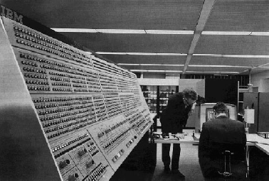

|  |
A IBM (International Business Machines Corporation) é uma das empresas mais influentes na história da computação e da tecnologia. Anos 1930-1940: A IBM fez importantes inovações em tecnologias de tabulação e cálculo. O IBM 701, lançado em 1952, foi o primeiro computador de produção em larga escala da empresa. A IBM introduziu o IBM 650, um dos primeiros computadores de uso geral e de grande sucesso comercial. Em 1956, a empresa lançou o IBM 305 RAMAC, que foi o primeiro computador a usar um disco rígido. Nos anos 1960 a IBM dominou o mercado de mainframes com a série IBM System/360, que estabeleceu o padrão para computadores compatíveis e versáteis. A série trouxe a ideia de compatibilidade de software e hardware. Em 1970 A IBM lançou o IBM System/370, que trouxe avanços significativos em capacidade e desempenho. Em 1975, a IBM também lançou o primeiro microprocessador de 8 bits, o 4-bit 5150, que seria precursor dos PCs. Em resumo, a IBM não apenas moldou a trajetória da computação ao longo das décadas, mas também desempenhou um papel crucial na evolução da tecnologia moderna. Suas inovações em hardware e software não apenas estabeleceram padrões da indústria, mas também abriram caminho para o desenvolvimento de tecnologias que são fundamentais para o nosso cotidiano. Com uma história rica em descobertas e avanços, a IBM continua a ser uma força motriz na transformação digital, contribuindo para o futuro da inteligência artificial, computação em nuvem e muito mais. Assim, sua influência perdura, refletindo seu compromisso contínuo com a inovação e a excelência tecnológica. |